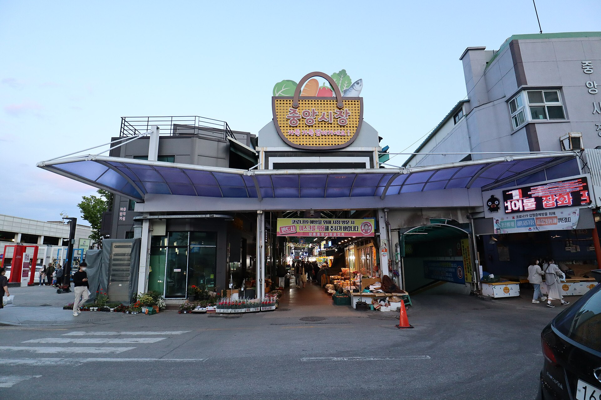
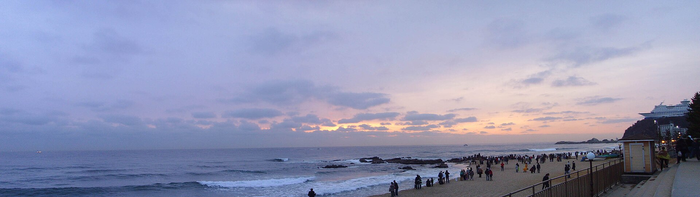
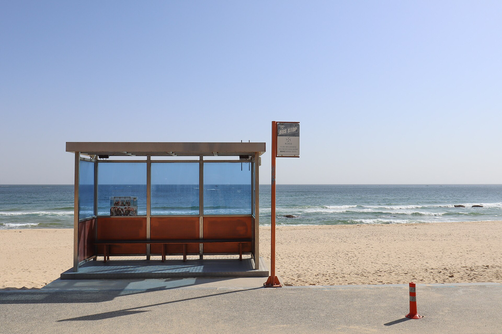
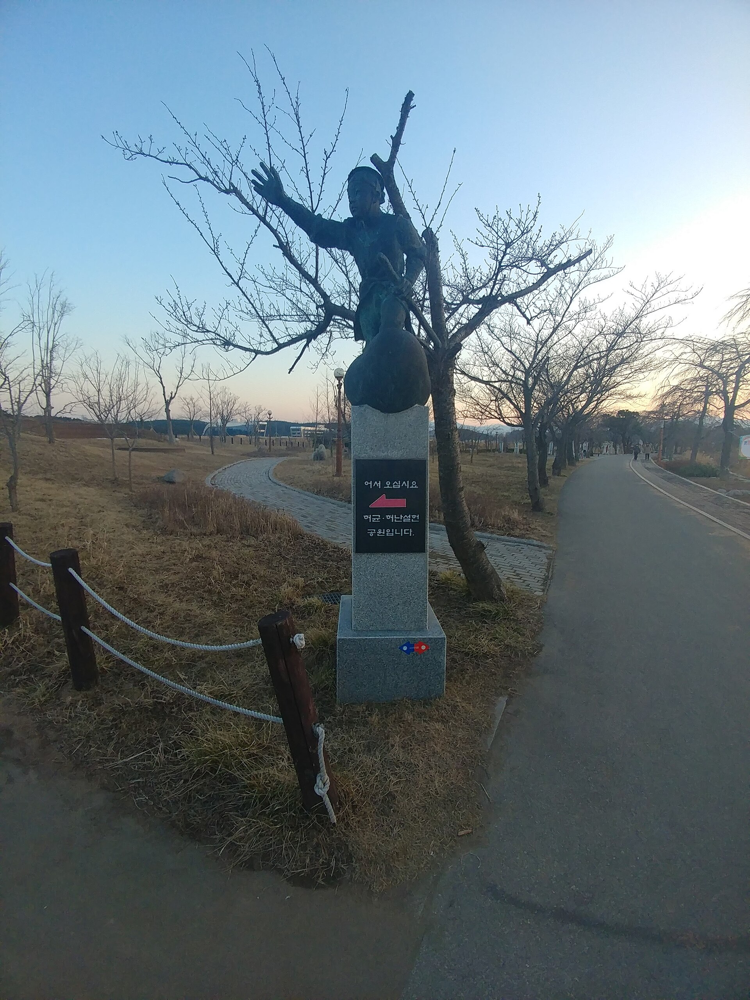
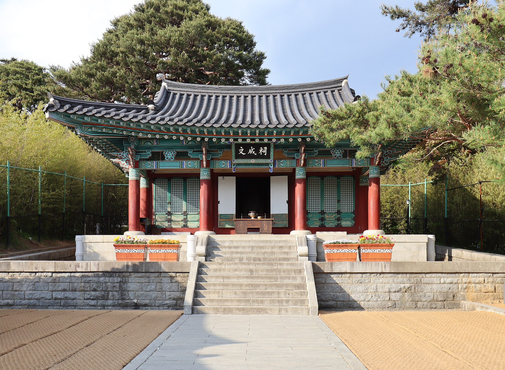
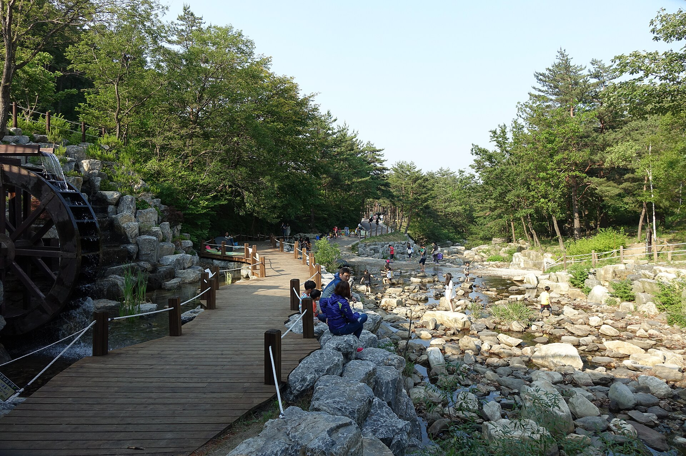
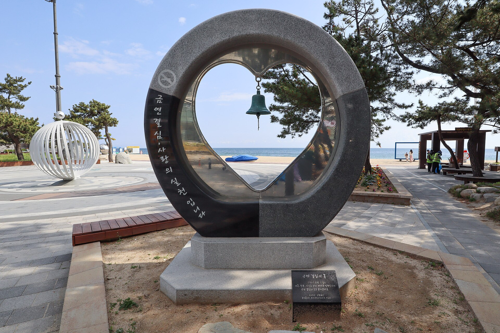

월화시장
월화거리·중앙시장 일원. 강릉 시내를 거닐며 장터의 활기를 느끼는 선택입니다.
"숲의 쉼, 현장의 나눔, 인문학이 만나는 하루"
2026. 10. 24 (토)
Gangneung Day Trip
안내 초안 · 세부 동선은 조율 중
솔향수목원에서 숲길을 거닐며 하루를 엽니다. 정선에서 강릉으로 향하는 오전의 첫 쉼입니다.
오전 힐링주문진 해나비지역아동센터를 찾아 현장의 운영과 돌봄 이야기를 나눕니다. 같은 길을 걷는 동료와의 배움이 있는 시간입니다.
현장 나눔김민섭 작가 인문학 강의(약 2시간)와 이어지는 간담회(약 1시간)로 오후의 중심을 채웁니다. 강의 장소는 안내 시 확인해 드립니다.
강의·간담회
솔향수목원의 솔숲으로 오전을 열고, 주문진 해나비지역아동센터에서 현장의 돌봄을 둘러본 뒤 인문학 강의와 간담회로 오후를 이어갑니다. 아동 돌봄 현장에서 애쓰신 분들을 위한 재충전의 당일 여정입니다.
기관방문 뒤 주문진남매식당에서 생선구이·대구탕으로 점심을 하고, 강의 후 간담회(약 1시간)를 진행합니다. 이후 월화시장·허난설헌공원·오죽헌 가운데 한 곳을 둘러보고, 영덕대게횟집 회정식으로 하루를 마무리한 뒤 정선으로 돌아옵니다. 강의 장소는 안내 시 확인해 드립니다. 본 일정은 안내 초안이며 현지 사정에 따라 조율될 수 있습니다.
주문진 해변 인근 아동 돌봄 현장을 방문합니다. 같은 길을 걷는 동료의 공간을 들여다보는 시간입니다.

기관방문
강원특별자치도 강릉시 주문진읍 해안1길 14, 3층
위치
주문진읍 해안1길 14호 3층. 주문진 해변·항 인근으로, 솔향수목원에서 북쪽으로 이어지는 오전 동선입니다.
방문 취지
아동돌봄 종사자 워크숍의 현장 탐방. 시설 운영과 돌봄 현장을 둘러보고 서로의 경험을 나눕니다.
시간
11:00 방문 후 12:00 주문진남매식당(작은다리길 31)에서 중식. 생선구이·대구탕으로 점심을 합니다.
김민섭 작가 · 「당신이 잘되면 좋겠습니다」
13:30~15:30 강의 · 15:30~16:30 간담회
빔·음향이 있는 세미나형 공간에서 진행합니다. 강의 장소는 강사와 수배 중이며 안내 시 확인해 드립니다. 간담회 중 음료·다과를 제공합니다.월화시장 · 허난설헌공원 · 오죽헌 가운데 한 곳을 둘러본 뒤 석식으로 이동합니다.

월화거리·중앙시장 일원. 강릉 시내를 거닐며 장터의 활기를 느끼는 선택입니다.

허균·허난설헌 기념공원. 생가터와 기념관에서 문향을 느끼는 선택입니다.

신사임당·율곡 이이의 생가. 경포 내륙에서 강릉의 문기와 역사를 돌아보는 선택입니다.
당일 전 구간 버스로 안전하게 이동합니다. (안내 초안)
정선 ↔ 강릉(솔향수목원·주문진 해나비·남매식당·경포) ↔ 정선
오전 출발
08:30
정선읍사무소 앞 · 집결 후 출발
저녁 귀가
19:30
정선 방면 출발 · 도착은 교통에 따라
마커에 마우스를 올리면 장소명을 확인할 수 있습니다.
전체 일정 — 정선에서 출발해 귀환까지 동선이 차례로 그려집니다
"상기 상세 일정은 현지 사정에 의해 변동될 수 있습니다." · 안내 초안
Day Trip
08:30
정선읍사무소 앞 집결 후 버스에 탑승하여 강릉 방면으로 이동합니다.

10:00
솔향이 가득한 숲길을 산책하며 일정의 첫 쉼을 갖습니다.
11:00
주문진읍 해안1길 14, 3층. 아동 돌봄 현장을 둘러보고 운영 이야기를 나눕니다.
12:00 · 중식
주문진읍 작은다리길 31. 해나비센터에서 이어 생선구이 · 대구탕으로 점심을 합니다.
13:30 ~ 15:30
「당신이 잘되면 좋겠습니다」 약 2시간. 강의 장소는 강사와 수배 중이며 안내 시 확인해 드립니다.
15:30 ~ 16:30
같은 공간에서 강의 소감 공유·현장 이야기 나눔을 약 1시간 진행합니다. 음료·다과를 제공합니다.
16:30 · 택 1
아래 세 곳 가운데 한 곳을 둘러본 뒤 석식으로 이동합니다. 당일 동선에 맞춰 안내드립니다.
월화시장
허난설헌공원
오죽헌

18:00 · 석식
경포 창해로 461 영덕대게횟집에서 회정식으로 하루를 마무리합니다.
19:30
버스로 정선 방면 이동합니다. 도착 시각은 교통 상황에 따라 달라질 수 있습니다.
행사 1주일 전부터 현지 날씨가 정확히 예보됩니다.
긴팔·니트와 바람막이를 추천합니다. 수목원·야외 산책과 실내 강의 모두 고려해 주세요.
솔향수목원 산책과 주문진·시내 도보가 있으니 편한 운동화를 챙겨 주세요.
접이식 우산·가벼운 겉옷을 준비해 주세요.
이른 출발·저녁 귀환이므로 멀미약·개인 상비약을 지참해 주세요.
* 작성 내용은 이 기기에만 저장됩니다.
안전하고 편안한 당일 여행을 위해 투어메이커가 함께합니다.
전 구간 버스 운행 및 이동 지원
가이드 · 기사 미정정선군청 스마트 가이드북 도입 기대효과 (1인당 기준)
본 행사는 종이 인쇄물을 대체하는 스마트 가이드북 도입을 통해 자원 낭비를 막고 탄소 배출을 줄이는 디지털 전환(DX) 실천 사례입니다.
| 일자/시간 | 상세 일정 | 식사·제공 |
|---|---|---|
|
당일 10/24(토) 08:30 출발 19:30 귀가 정선 ↔ 강릉 당일 왕복 |
|
중:
다과:
석:
|